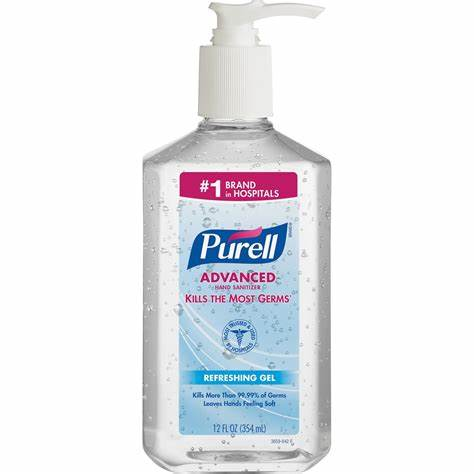
Hand Sanitizer
- Produto: Produto de sanitização à base de álcool, formulado conforme as recomendações da Organização Mundial da Saúde (OMS) e da FDA.
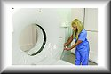
CT Gantry Cover
- Produto: Proteção para CT Gantry contra sangue, contraste e outros fluidos corporais.
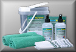
Clean Screen System
- Produto: Kit completo para limpeza de placas CR, capaz de limpar mais de 500 placas de imagem CR.
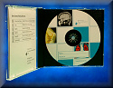
CD Storage
- Produto: Mídia CD/DVD de grau médico e embalagens personalizadas ou genéricas para sua instalação.
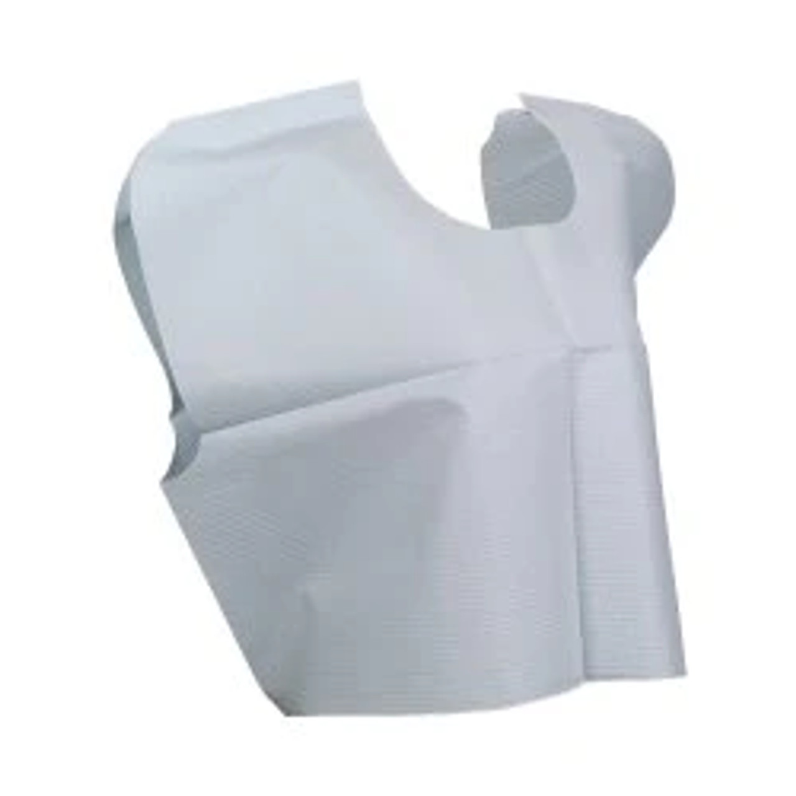
Exam Capes/Gowns
- Produto: Capas e roupões de exame descartáveis para pacientes.
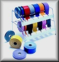
Labels for Envelopes
- Produto: Etiquetas de marcação de jaquetas de Raios-X e dispensadores.
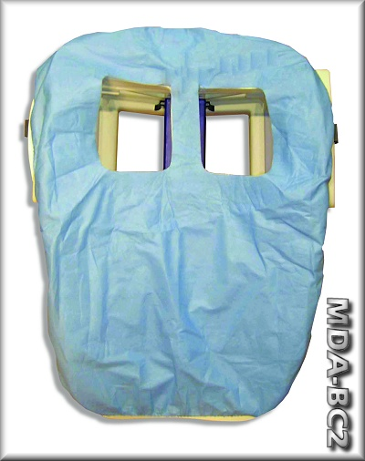
Breast Coil Covers/Drapes
- Produto: Drapos descartáveis para bobinas mamárias de sistemas de RM específicos.
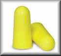
MRI Earplugs
- Produto: Protetores auriculares seguros para RM. Tampões de ouvido de espuma, sem riscos conhecidos.
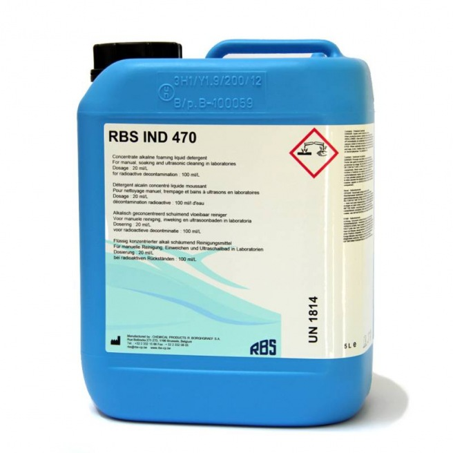
BindIt Radioactive Decontamination Products
- Produto: Bind-It™ é um limpador seguro, suave e extremamente eficaz que remove o iodo radioativo da maioria das superfícies e da pele.
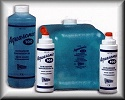
Ultrasound Gel
- Produto: Uma ampla gama de gel para ultrassom disponível em frascos e potes maiores.
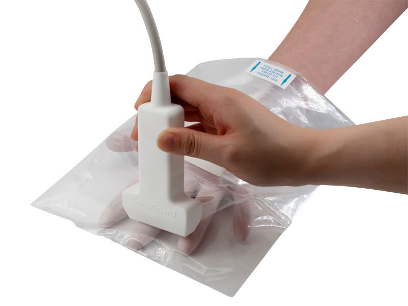
Ultrasound Probe Covers
- Produto: Capa descartável para sondas de ultrassom.
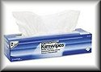
Sanitizing Wipes
- Produto: Lenços sanitizantes para instalações médicas e de radiologia.